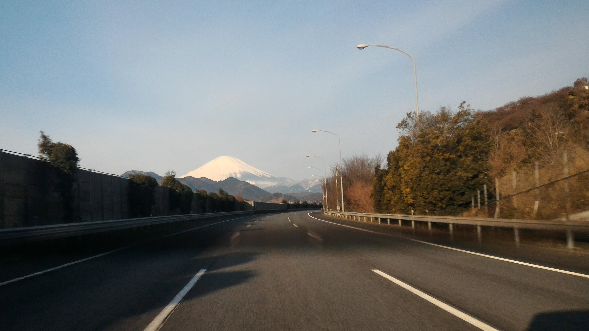
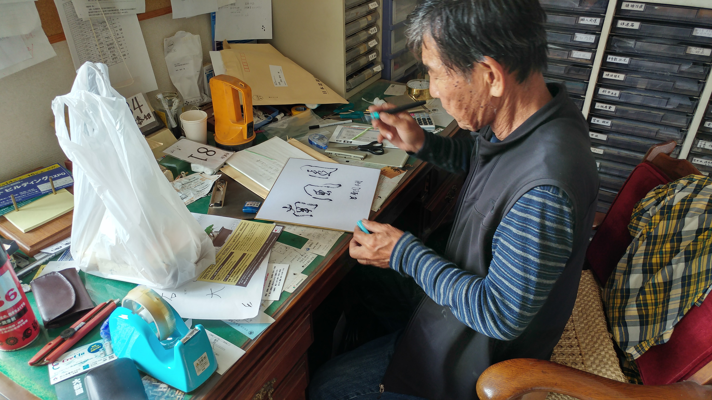
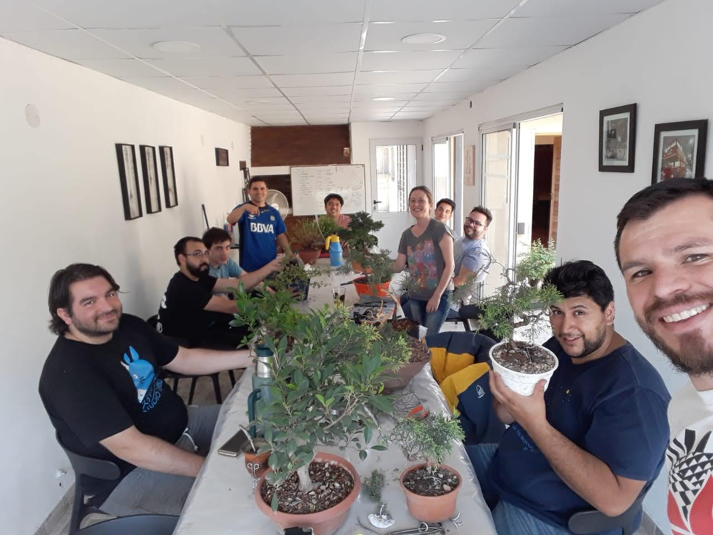
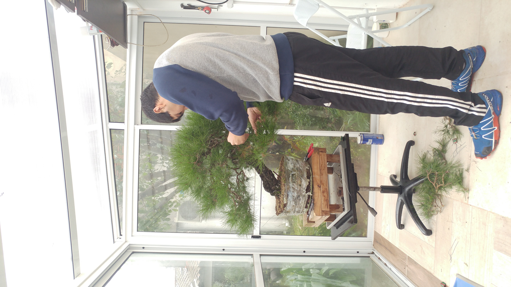
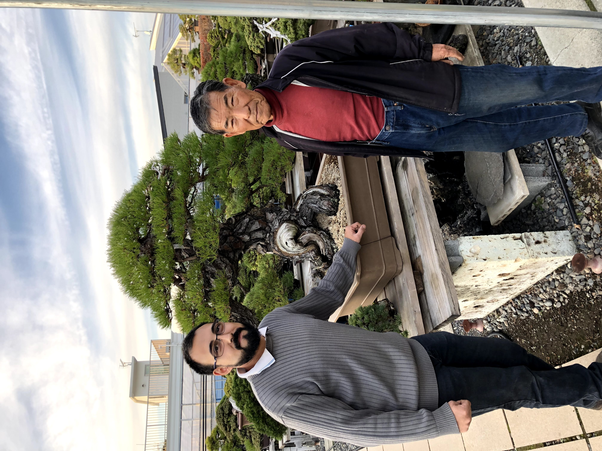

Nanfuen comienza como una idea despues del primer viaje a Japon (en 2014) y haber estudiado en Taisho-en por primera vez.
El nombre Nanfuen significa Viento del sur y fue elegido por mi Oyakata Nobuichi Urushibata, despues de preguntarle si podria comenzar mi propio estudio de bonsai.
Dato curioso: el viento del sur en Japon se caracteriza por ser calido y apacible, especialmente en Shizuoka, el viento del sur en Argentina se caracteriza por ser frio pero tambien es muy representativo. Oyakata se rio bastante cuando se lo conte.
El primer viaje me mostró el largo camino de conocimientos para recorrer asi que para 2016 planeé volver. Ese año pude ver de nuevo la Kokufu ten, como tambien ayudar a montar una pequeña muestra en una exhibición de autos de lujo, así como también preparar árboles para un evento político. 2016 fue un año especial también porque Oyakata me regaló el nombre para el vivero (Nanfuen) y porque a la vuelta comenzamos con los talleres en Córdoba.
En 2018 empezamos con los talleres en Tucuman y seguimos con los de Cordoba, a su vez también hicimos el primer taller en casa (Buenos Aires). Para Octubre ya estábamos de nuevo en Japón, donde tuve el honor de conocer el jardin de Kimura-san como también Shunkaen (de Kobayashi-san) e incluso hubo tiempo para ir a la Shuga-ten (segunda exhibición más grande de Shohin bonsai en Japón).
 Luego la situación de pandemia nos llevó a trasladar tanto ventas como taller a formato online, ampliando también los productos que hoy podemos ofrecer.